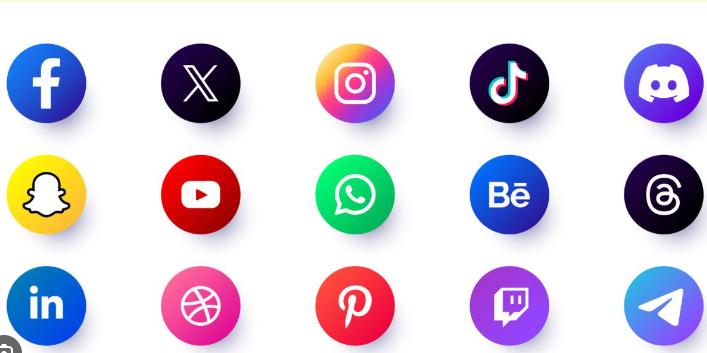

Facebook
A pesar de que su crecimiento se ha frenado, Facebook, con casi 3.000 millones de usuarios, sigue siendo la red social más utilizada. De acuerdo con su creador, Mark Zuckerberg: en Facebook “se da a la gente la oportunidad de contar su historia. Es una herramienta para expresarse.”
En este sentido, algunos de sus principales atractivos son ponerse en contacto y chatear con amigos de todo el mundo, participar en comunidades online, compartir contenido, organizar eventos, jugar a juegos, comprar y vender productos o publicitar cualquier negocio.
|
Instagram
Con 2.000 millones de usuarios, Instagram es otra red social muy popular. Esta red social, propiedad de la misma compañía que Facebook, en sus inicios solo contaba con la fotografía como principal y único formato, pero esta ha ido evolucionando y ahora también dispone de un formato de vídeo corto, conocido como reels.
En este tipo de red social, cada usuario tiene su propio perfil y un feed o tablón donde aparece contenido relacionado con sus preferencias. Los usuarios interactúan entre ellos a través de comentarios, mensajes privados o las historias (publicaciones que desaparecen en 24 horas).
|
X (Ex twiter)
Adquirida en 2022 por el multimillonario Elon Musk, Twitter es una red social vertical mixta que se caracteriza por la publicación de contenido en mensajes cortos. Aunque se ha ampliado recientemente, al inicio, tan solo se podían publicar 280 caracteres en cada tuit.
Los usuarios de Twitter utilizan esta plataforma para compartir sus pensamientos y opiniones alrededor de cualquier temática. El contenido humorístico en forma de memes, las polémicas y el uso de los #hashtags (etiquetas que agrupan tuits por una temática) son también elementos característicos de esta red social.
|
Tiktok
TikTok, con 1.051 millones de usuarios, es la sexta red social con más usuarios activos y la última en incorporarse a la lista de las redes sociales más populares, especialmente entre la generación Z.
Se trata de una red basada en compartir vídeos cortos musicales, como coreografías o retos. Por tanto, la música es la gran protagonista. Es una red social divertida y llena de humor, aunque también hay espacio para el contenido educativo.
|
|
LinkedIn
LinkedIn es la red social profesional más grande del mundo. Miles de empresas y trabajadores la utilizan a diario con distintos objetivos, como ofertar y buscar empleo. Es una red social donde el networking, las oportunidades profesionales o el emprendimiento son los verdaderos protagonistas.
|
|
YouTube
Usuarios y “YouTubers” dan vida a la plataforma de contenido generado por los propios usuarios más grande del mundo. Propiedad de Google, YouTube permite crear canales de contenido y compartir vídeos de todo tipo: desde música o tutoriales hasta videoreacciones, directos, humor, podcast, vídeos educativos, etc.
|
|
Pinterest
Pinterest es una red social basada en tableros temáticos. Cada usuario puede guardar colecciones de “pins” (imágenes, vídeos, artículos, etc.) y compartirlas con otros usuarios. Es una plataforma interesante para organizar proyectos o guardar contenido de una forma organizada.
|
|

|